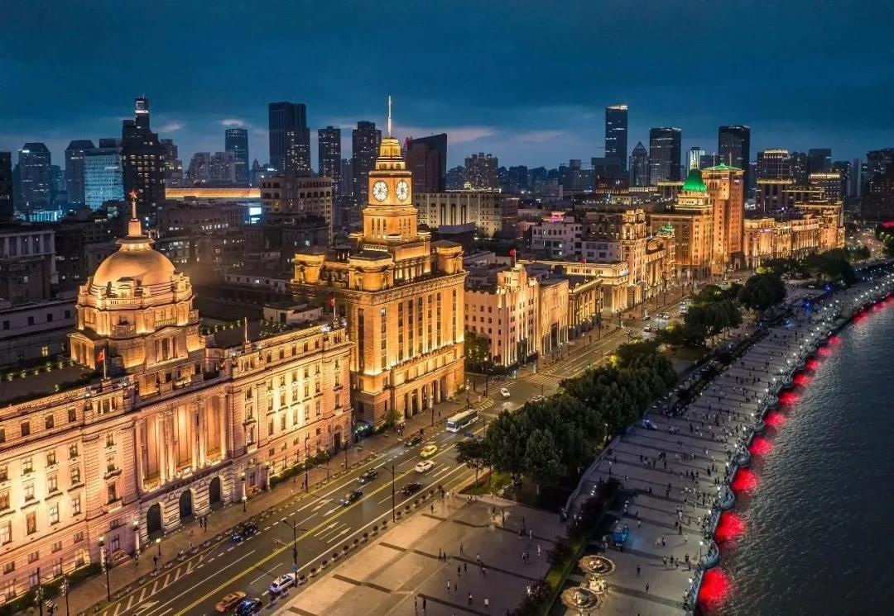
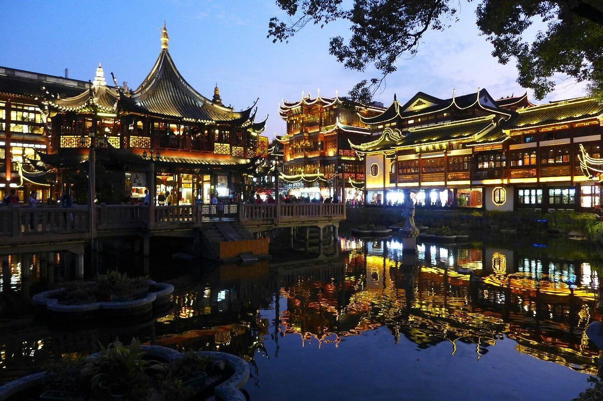

Top 3 Nature Spots in Shanghai
The Bund (Waitan)

Introduction
The Bund (or Waitan) is Shanghai’s most iconic waterfront, a 1.5-kilometer stretch along the Huangpu River lined with 52 historic buildings. Built in the late 19th to early 20th centuries, these structures showcase a mix of architectural styles—Neoclassical, Gothic, Baroque, and Art Deco—once home to foreign banks, consulates, and hotels. Today, the Bund is a symbol of Shanghai’s colonial past and modern present: across the river, the futuristic skyline of Pudong (with the Oriental Pearl Tower and Shanghai Tower) stands in stark contrast to the old-world charm of the Bund’s buildings.At dawn, the Bund is quiet—perfect for photos of the sun rising over Pudong. By day, it’s busy with tourists and locals walking along the promenade. At night, the Bund’s buildings light up with warm golden lights, and the Huangpu River glows with reflections of Pudong’s neon—this is when the Bund feels most magical.
Best Time to Visit
Autumn (September–November): Clear skies, mild temperatures, and beautiful sunset views.
Night (7 PM–9 PM): Buildings are fully lit, and the river reflects Pudong’s neon—ideal for romantic walks.
Price
Bund Promenade: Free entry (no charge to walk along the waterfront).
Huangpu River Cruise: 80 CNY/person (standard), 120 CNY/person (VIP deck with snacks).
Yu Garden (Yuyuan) & Yu Garden Bazaar

Introduction
Yu Garden, built in 1559 during the Ming Dynasty, is a classical Chinese garden in the heart of Shanghai’s old town. Covering 20,000 square meters, it’s designed with traditional “scholarly garden” principles—rocky hills, winding ponds, covered walkways, and pavilions that offer hidden views at every turn. Highlights include the “Exquisite Jade Rock” (a 3.3-meter-tall porous stone, one of Shanghai’s three treasures), the “Hall of Jade Magnificence” (with intricate wooden carvings), and the “Lotus Pool” (dotted with lotus flowers in summer).Adjacent to the garden is Yu Garden Bazaar, a bustling pedestrian street lined with shops selling traditional crafts (jade, paper cutting, silk), street food stalls, and souvenir stores. The bazaar’s entrance is marked by the iconic “Fuyou Gate” (a red archway with golden carvings)—it’s the perfect place to soak up Shanghai’s old-town vibe.
Best Time to Visit
Spring (April–May): Peach blossoms and peonies bloom in the garden, 10°C–20°C.
Summer (July–August): Lotus flowers float in the pool, but it’s hot—visit in the morning or evening.
Price
Yu Garden: 40 CNY/adult; 20 CNY/students (with valid ID); free for kids under 1.3 meters.
Yu Garden Bazaar: Free entry (shops and stalls have individual prices).
Shanghai Disneyland Resort

Introduction
Shanghai Disneyland Resort is a magical escape from the city’s chaos, blending Disney’s classic characters with Chinese culture. The park has six themed lands: Mickey Avenue, Gardens of Imagination, Adventure Isle, Treasure Cove, Fantasyland, and Tomorrowland. Highlights include “TRON Lightcycle Power Run” (a high-speed roller coaster in Tomorrowland), “Pirates of the Caribbean: Battle for the Sunken Treasure” (a boat ride with 4D effects), and the “Golden Fairytale Fanfare” parade (featuring Disney princesses in costumes with Chinese elements).What makes Shanghai Disneyland unique is its Chinese touches: the “Enchanted Storybook Castle” is the tallest Disney castle in the world, with Chinese dragon carvings on its spires; during Chinese New Year, the park hosts special parades with lion dances and red lanterns; and restaurants serve dishes like “Mickey-shaped xiaolongbao” and “Donald Duck rice cakes.”
Best Time to Visit
Weekdays (Monday–Thursday): Fewer crowds than weekends; shorter wait times for rides.
Autumn (September–November): Mild weather (15°C–25°C), no rain—perfect for outdoor parades.
Price
Standard Day Ticket: 435 CNY/adult; 320 CNY/kids (3–11 years old); free for kids under 3.
Peak Day Ticket (weekends, holidays): 545 CNY/adult; 405 CNY/kids.
Disney Premier Access: 50–150 CNY/ride (varies by attraction).